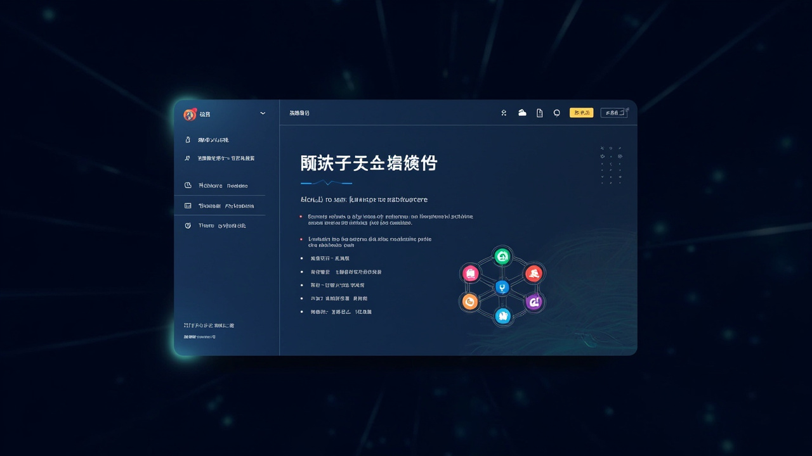

$ demo_env --start
PostgreSQL = 17 collections · 3,429 records · online
Qdrant = 5,786 vectors · cached hot
oMLX 8080 = 22GB ceiling · 4 models loaded
Gateway = 18789 · 0.12s avg latency
✓ 全部就绪 · 主公随时 "切到下一页"
$

图 3 · 主公在天保智研内部路演 · 真实截图
🗄️
Demo 1
数据底座
data + 超级单体智能体
🔬
Demo 2
投研系统
research + 智能编程助手
📋
Demo 3
项目管理+报告
project + report

data + 超级单体智能体
research + 智能编程助手
project + report
3 个重磅案例 · 覆盖 5 Agent × 2 助手全协同链路
这不是概念演示——已经建成、持续运行的知识底座系统
PDF → TXT
pdftotext + PyMuPDF
双引擎提取
LLM 核心提取
实体/指标/关系/逻辑链
3 并发审查
中间 JSON
术语统一 + 错别字修正
512-1024 token 分块
PostgreSQL 入库
entity / indicator / chunk
relation / logic 7 表
BGE-M3 向量化
本地 MLX 推理
Qdrant 3 集合入库
质量门控
5 层审计：Schema → Wiki
全链路质量保障
Wiki 生成
实体 1055 + 框架 190
指标 3279 + 逻辑链 988
7 步全流程，每步都经过验证。下一页看产出物——LLM Wiki 知识底座。
193 份深度研报完成入库——这是 Agent 做投资研究的第一大信息来源
193 份研报 · 5,894 实体
11,075 关系 · 25 行业
🔍 点击查看行业分布
193 份深度研报 · 5,894 个实体 · 11,075 条关系 · 25 个行业
新能源电池 2,068 实体 / 电力设备 1,637 / 半导体 291 / 医药 251 / AI 131
静态 Wiki + API 检索
Qdrant 向量库 >95% 命中率
🔍 点击查看详情
静态 Wiki：localhost:19000（对外知识门户）
API 服务：localhost:19001（Agent 检索接口）
Qdrant 向量库：语义检索命中率 >95%
data 清洗 + 超级单体智能体 调度
5 层质量审计 → 批次入库
🔍 点击查看流程
超级单体智能体 准备 PDF → data 运行 clean_v2.sh（7 步全流程）→ 超级单体智能体 5 层质量审计 → 下一批次。193 份深度研报已完成入库，覆盖 25 个行业。
🔴 Demo 2A · 先看看这套"看起来很严谨"的架构
4 Phase 流水线 × 9 步质控链 · 64K 行 Python · 42 个模块 · 这是真实在跑的 V3 系统
📐 4 Phase 流水线（单向，无反馈回路）
🔍 每个 Work Stream 内部：9 步质控链
验证层：一致性验证 → Challenge A 评分 → 子框架覆盖度
输出层：关键发现提取 → 非上市对标 → 综合置信度
⚙️ 运行数据
Challenge A 通过率 >90% · 报告完整度 >95%
看起来很严谨，对吧？
但问题就出在"严谨"上——Phase 间断层、质控是外挂的、Agent 不知道"为什么被打回"。
下一页看：怎么用 1 个方法文件反超 64K 行代码。
🟢 Demo 2B · 但是——严谨 ≠ 好用
上一页展示了 V3 的全部架构细节。下面看问题出在哪，以及怎么用1 个方法文件反超——并在星恒电源项目上验证。
🔴 阶段 1：V3 工作流搭建
· 53 个 Python 文件 · ~64K 行代码
· 19 固定维度 · Challenge Gate A/B 质控
· 40+ 版本迭代（V3.19 → V3.41.11）
问题：5 类 bug 反复修复 20+ 次
🟡 智能编程助手 诊断 3 大缺陷
② 外挂式质控：9 步 QC 外部执行，Agent 不知道「为什么被打回」
③ 交叉合成太浅：仅 3 项交叉，WS1 结论不触发 WS2 重新审视
🟢 阶段 2：hv-analysis 升级
· 1 个 SKILL.md（2401 行）替代 64K 行代码
· 4 Phase 自适应闭环（每章 Q1-Q4 自检 → 即时补检索）
· S1-S7 警醒信号（决策偏见检测）
· cite-then-answer 幻觉率 15% → <3%
一天内完成认知跃迁
🔵 阶段 3：星恒项目方法论验证
· 16 份报告 · 主报告 ~64,000 字
· 多源数据交叉验证（PS/PB/PE 三方法）
· 四层护城河侵蚀追踪（FY2020-FY2025）
· 6 家公司 31 个法律问题核查
· 第 02 章已详细展开项目全貌
📊 方法论改进效果
新方法（hv-analysis）：内嵌自检替代外部门禁
cite-then-answer 防线：幻觉率降至 <3%
结论：方法文件的改进直接提升报告质量
| 对比维度 | V3 旧范式 | hv-analysis 新范式 |
|---|---|---|
| 代码量 | 64K+ 行 Python · 42+ 模块 | 0 行代码 · 1 个 SKILL.md（2401 行） |
| 架构 | Phase 1/2 并行，Phase 3 串行等待全部上游，无反馈回路 | 4 Phase 自适应闭环，每章 Q1-Q4 自检 → 即时补检索 |
| 质控 | 9 步 QC 链外挂式门禁，Challenge A 4 维 ≥40 / B 7 维 ≥75 | 内嵌自检 Q1-Q4（写时自查）+ S1-S7 警醒信号（决策偏见检测） |
| 深度 | 4 WS 独立分析，但交叉合成仅 3 项，缺产业链纵深 | 21-25 章自适应模板，纵+横交叉洞察 7 章，含产业链全景 |
| 幻觉率 | ~15%（年份错配/数字迁移） | <3%（cite-then-answer + 双重验证） |
| 估值 | 单一 DCF，无模拟 | Monte Carlo 10000 次 + IRR 双模型交叉 |
| 输出质量 | ~8,000 字，需人工大量补充 | 21,392 字，信息密度 2.6x，可独立交付 |
📋 Demo 3 · 项目管理与报告生成：project + report 协同
project Agent 跟踪 28 个项目全生命周期 · report Agent 一键生成 Word/PPT/PDF 专业文档
📊 project Agent · 项目全生命周期管理
28 项目统一管理 · 卡片/列表双视图 · 全文搜索 · 🔍 点击展开
项目报告中心（jinzhanxiang.github.io/tianbao-projects/）
卡片/列表双视图 · 分类筛选（储备/并购/汇报/知识图谱）· 全文搜索
28 个项目统一管理：7 核心 + 9 储备 + 7 工具 + 5 知识库
research → project → git push → 3 在线站点 · 🔍 点击展开
research 出报告 → sessions_send 通知 project → git push GitHub Pages
降级链：GitHub Pages → Vercel/Cloudflare → ngrok 临时隧道
3 个在线站点：天保项目中心 / 储备项目库 / 星恒报告
独立时间线 · 自动版本控制 · 报告链接直接分享 · 🔍 点击展开
每个项目独立时间线页面（如星恒电源：5.12 方案到达 → 7.7 纳入储备库）
自动版本控制 · 报告链接直接分享同事
📄 report Agent · 专业文档一键生成
GB/T 9704-2012 国企公文标准 · 20类文档 · 34模板 · 🔍 点击展开
C# .NET SOE 框架 · GB/T 9704-2012 国企公文标准
20 类文档 · 34 个 Markdown 模板
三会材料 / 请示汇报 / 分析报告 / 尽调报告 / 法律文件 / 估值报告
仿宋字体 · 标准页边距 · 红头文件格式
IR→PPTX 编译引擎 · 5套主题 · 14模板 · 🔍 点击展开
IR（中间表示）→ PPTX 编译引擎 · 84KB 主程序
5 套主题（国企公文/商务汇报/科技风格/简约现代/党建主题）
14 个 IR 模板 · 演进 8 个大版本（v3.7 → v11.1）
PDF · 思维导图 · 交互式 HTML · 🔍 点击展开
PDF：Puppeteer Chrome-headless A4 渲染
思维导图：Markmap 自动生成（如星恒 v22 版 803KB）
交互式 HTML：带 SVG 图表 + Dark Mode + 响应式
📊 演示总结 · 3 大 Demo 覆盖全协同链路
193 研报 · 5,894 实体
11,075 关系 · 25 行业
星恒电源 25 章 · 42 图表
幻觉率 15% → <3%
Word 20 类型 · 34 模板
PPT IR→PPTX 5 主题
演示核心信息
以上 3 个演示覆盖了5 Agent × 2 助手的全部协同链路——从数据底座到投研分析到项目交付。
每个演示都是真实生产系统——不是原型，是已经在跑的基础设施。
第 04 章大家提出的需求，如果预设 Demo 未能覆盖——演示结束后单独为你跑一遍。
演示环节到此结束。接下来第 07 章——下一步做什么？花 30 秒，找到你的第一个任务。